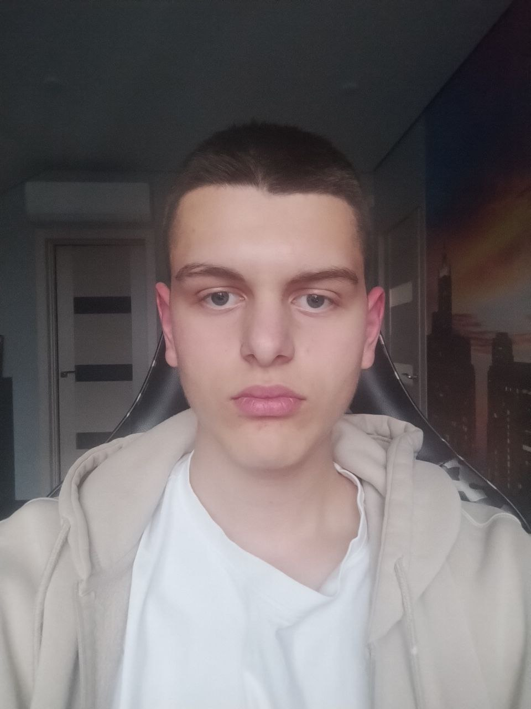

Влад Матлах
Мене звати Влад Матлах, мені 16 років. Я народився 10 липня 2009 року та проживаю у місті Луцьк.
Наразі я навчаюся на другому курсі ТФК ЛНТУ за спеціальністю 126 — Інформаційні системи та технології.
Я цікавлюся світом сучасних технологій, особливо напрямом 3D-графіки, де можу поєднувати технічні знання з творчістю. Також важливу роль у моєму житті відіграє спортзал — він допомагає підтримувати дисципліну, мотивацію та здоровий спосіб життя.
Моя мета — постійно розвиватися у сфері IT, удосконалювати навички створення цифрового контенту та в майбутньому реалізувати себе як фахівець у галузі інформаційних технологій.